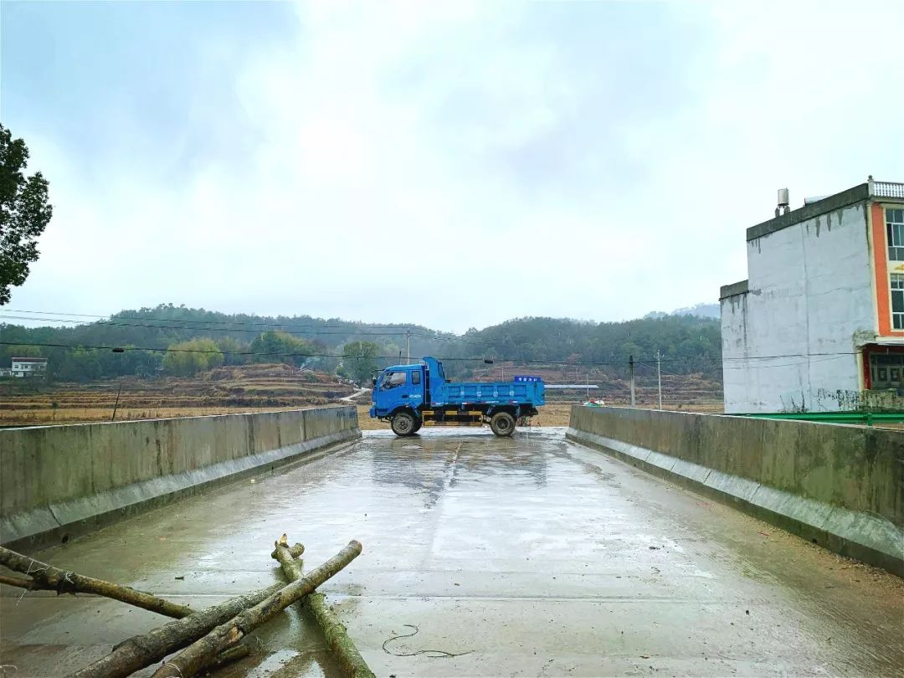
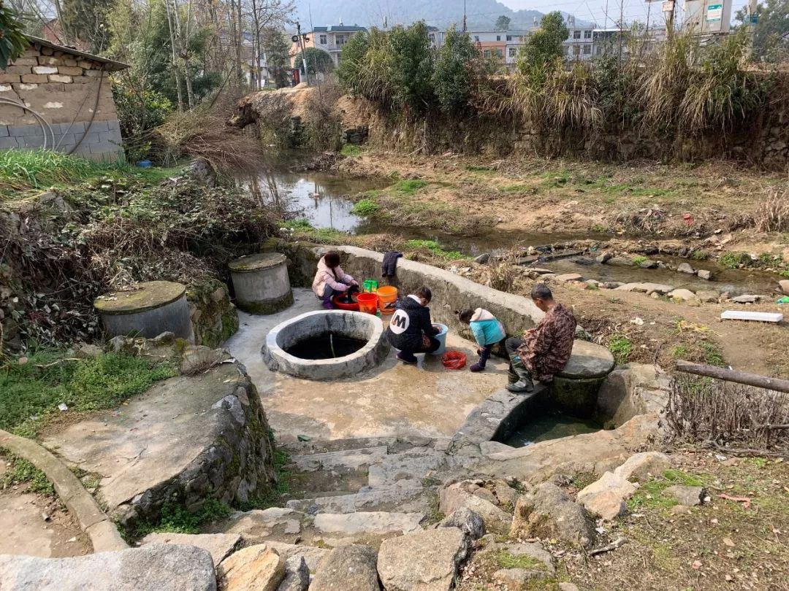

一个湖北村庄里的中国
原文链接 备份链接 一堆堆高土、一捆捆树桩、一台台挖机、一辆辆卡车横在各个村庄的村口，一个个交警守在城区、乡镇各个紧要路口。蕲春县的村村“封”，像铁桶一样严密。 这是一篇湖北乡村的疫情观察，发自湖北省蕲春县。 它属于黄冈市，距离武汉只 …
以下文章来源于南风窗 ，作者何焰



一堆堆高土、一捆捆树桩、一台台挖机、一辆辆卡车横在各个村庄的村口，一个个交警守在城区、乡镇各个紧要路口。蕲春县的村村「封」，像铁桶一样严密。
本文转载自「南风窗」，内容已获授权
ID：SouthReviews
作者&图片：何焰
这是一篇湖北乡村的疫情观察，发自湖北省蕲春县。
它属于黄冈市，距离武汉只有 2 个小时车程。过年到现在，全国都在抓「武汉出走者」，但蕲春县没法抓，许许多多武汉周边的县城都没法抓，因为谁家没有个武汉回来，或者是打那过路的人？自己家没有，邻居家也有。到了下面乡镇，农村人的说法是：抓不过来。「抓」，不是抓捕的意思，是抓紧的意思。农村防疫到今天，也不是没人抓，是抓不过来。

一
妹妹今年读初三，疫情迟迟不结束，学校却还是如期开学了。只是课程转到了线上 QQ 班级群里，从早上 7:00 到晚上 8:00 ，时间安排得很紧凑。
在家里上课，过年年货多，她不是嗑瓜子就是剥花生，嘴空不下来。今天我又捉到她嗑瓜子。「你这是上课还是下课呢！」
「我班英语老师隔离了，大家在跟她聊天，没上课。」
妹妹说话慢悠悠，把手机给我看。她老师真的隔离了，今天可能是隔离的第 13 天，因为老师在群里说，她 13 天没见到自己的儿子了。日子一算就知道，她大概是大年初一进医院的。
阳台上戴着口罩踢毽子的女孩
从初十开学到现在，课已经上了 3 天了，英语老师的网络经常会卡顿，今天上课前跟同学们解释，才说出了自己住院隔离的事。起初我很震惊。如今无论是武汉市、黄冈市区，还是我们下面乡镇，正常生活早已停摆了，我从没想过在医护、后勤、交警、志愿者们之外，还有其他职业也需要「逆行」。不过后来想想，也不奇怪。因为这里是湖北，是黄冈，而她的英语老师又是刘河镇人。刘河镇是蕲春县「上半县」的中心，也是这里的疫情重灾区。
在疫情初期，就有网络谣言说，黄冈市一乡镇医院全体医务人员感染新型冠状病毒肺炎，说的就是刘河镇卫生院。
1 月 26 日，我向刘河镇卫生院院长求证，得知截至大年初二下午，卫生院全院隔离、疑似感染的人数是 20 人，全院约 180 名工作者中，有 4 名医护人员感染。这个乡镇医院的院长告诉我，自己一辈子没有接过这么多电话，不是记者打来的，就是捐助者打来的。而我最近一次听到刘河医院的消息，是大年初六。
刘河镇镇长在网上发起募捐，因为接收到县指挥部的命令，要在一个 1200 平方米的驾校空地上， 2 天盖起一个乡镇版的「小汤山」医院，开发热门诊。到今天，如果不是妹妹的英语老师隔离，我的视线已经望不到 15 公里以外的刘河镇。因为我们狮子镇隔离、观察的病人数量也开始上升，被隔离的人里面，有我认识的人、我爸妈认识的人，我曾经几百次地路过他们的家门。而早期封路时的「交通管制」，也已经升级成为「出行管制」，别说机动车，现在连上街步行，碰到关卡都需要「通行证」。
一堆堆高土、一捆捆树桩、一台台挖机、一辆辆卡车横在各个村庄的村口，一个个交警守在城区、乡镇各个紧要路口。蕲春县的村村「封」，像铁桶一样严密。
一种感觉越来越强烈了，我说不清是「坐井观天」，还是「不识庐山真面目，只缘身在此山中」。我是黄冈人，却对现在的黄冈所知甚少，我就在湖北，却看不全湖北的面貌；我在家中隔离，做线上救援的志愿者，一整天不离开手机地工作，到晚上，未读信息仍有 10000 条，仍然时刻感到茫然，不知道前线、真相、细节到底是什么样。我只能对周遭事物变得更敏感一些，嘱咐家人，黄冈是湖北重疫区「前」三甲，我们要做好隔离。可回家两周后，我从家里的「知识领袖」，变成了家里的「恶人」。春节时期的湖北，湿冷袭人，历来都是感冒发烧的高峰期。初九时，我家里已经有多人出现咳嗽、发烧症状。妈妈咳嗽咳一整夜，要去村卫生所挂吊水针。我劝说，特殊时期先做保守治疗，对症吃点药试试，被批评，「咳嗽不在你身上，你不知道难受」。
结果去了村卫生所后，里外两间一共才二三十平方米的小屋子，十几个人等着要打针。动不动走进来一个老人家没有戴口罩，小护士就跑过去，给他发一个口罩戴上。我们村 1700 人，封村之后，所有人都指着这一家卫生所。
卫生所里，一个医生，一个护士。医生穿着防护服，护士只穿白大褂，戴口罩。妈妈说，医生的防护服一看就不是新的，因为新防护服拿出来穿是皱的，他那件已经穿得平平整整，没有折痕了。医生也不是我们村的村民，他每天步行 5 公里，来村里开诊。
我担心村卫生所人口密集，交叉感染，打电话给妈妈。我说「你要不要去门口等」，她说诊所门口已经站着有人了；我说「妈妈你离别人远一点」，她说这里只有这么大个地方；我再催她，「妈你快一点」，她就生气了：「你以为卫生所是你家开的吗？」我妈庆幸，她是戴着口罩去的。农村里很多人没有口罩。初九那天太阳好，我隔壁邻居家的晾衣杆上，晾着洗过的口罩，隔壁一家，也是这样。

二
村里人抗疫，一定是和城市不一样的。
过年时节，城市空了，农村满了。平日里空巢的农村，到过年，才能迎来一年一度的热闹。这里「地大天蓝知识少」，太阳一出来，家家户户在门口晒太阳聊天，就算各村干部从早到晚地巡逻，有的村广播一日宣传三四遍，可实际隔离的效果，往往还不如老天爷下一场雨明显。鄂东南地区，正月初三的雨停，一直晴到了正月十三，中间 10 天的好太阳，给当地无数的农村家庭，带来了出门的「诱惑」。出门取暖，是湖北冬天的必备项目。尤其是老人，喜欢聚在一起晒太阳，一个人要瞌睡，两三个人有个伴，坐得远了，说话又听不到，就挨近点。可是一旦有人咳嗽、吐痰，旁人看到就心慌。
村长出来巡村，劝说他们，现在外面有传染病，「就像猪瘟一样的，发人瘟」，但总有人笑嘻嘻地说，「我这个老儿，死得叻」（方言，意为：我这个年纪了，死也无大碍），「我们山旮旯儿，没事吧」。
老年人聚众是普遍现象，要靠自家中青年来管。但村里的年轻人聚众，也不稀少。

广播是农村防疫的重要工具
从年初开始，我们村村干就骑摩托车在全村巡逻，早上 9 点到下午 5 点，用大喇叭喊：勤洗手、不串门、不办酒席、不打麻将，到后来疫情严重，各小组的组长也骑摩托车出来巡逻了。
村长裴本权告诉我，现在打麻将的人确实是少了，他这几天接到好些个举报电话，有老婆举报老公的，也有父亲举报儿子的，村里几个麻将馆早就是他们村干的重点排查对象。
但是晒太阳的杜绝不了。三五成群，站在一起聊天的，在村头散步的，看到村长来了避一下，村长批评他们，他们就转过身去，要不然就是笑笑，说「没事吧」，「都是我几个自己屋里的人」。「自己屋里」，是宗族的意思。一个宗族多则九家十家，少则四五家，都是叔伯亲戚，平日里也走得近，所以是「自己屋里」。大家的意思是，「隔离」是跟别人隔离，不用跟「自己屋里」人隔离。
「自己屋里」，这是一个很温暖的说法，代表着农村里小家庭与小家庭之间的相互信任、扶持，但是它有一个与过去不同的地方，过去的宗族是有「大家长」的。大家长一声令下，「大家各自在房子里隔离」，很容易执行下去。
可如今温情还在，权威却已解体，一个宗族里，没有谁说话是真正有效的、所有人都听的，村民们的卫生意识也不足以让各个人都提高警觉，不受人督促。除夕前后，我爸妈一边在外面跟人聊天，一边还大声说：「我女儿不要我在外面。」那时候，这句话一听，就知道家里有一个有文化的，了解疫情，知道隔离。时间走到正月十三，封村 2 周之后，我再说这样的话，「不要在外面」，他们就会嫌烦。戴口罩的办法，我也反复教给家中长辈多次，口罩里的钢丝要捏到紧贴鼻梁，下半部分兜住下巴，向外呼气时口罩不漏气，才算是戴好了，收的时候，要尽量避免碰到口罩外侧。可是一转身，就发现我爸妈把口罩兜在下巴上，口鼻都在外面。他们嫌闷。因为我准备得早，家里的口罩算是充裕的，起先还送给亲戚一些，等到初七、初八，也日渐殆尽了。不知道我爸又从哪里搞来的 2 包口罩，打开之后发现尺寸过小，戴上脸后，勉强能遮住他的鼻子和嘴巴。我爸本来就胖，圆圆肉肉的脸上，挂着一个迷你的小口罩，脸颊、下巴一大圈红红的肉，露在外面。
但感谢这 2 包口罩，又让我的大家庭渡过了几天。我妈还戴着它去了村卫生所。再后来，是村里小卖部突然卖口罩了。他们说，是村长联系了一家医药公司的朋友，在镇政府等了 3 小时，开到通行证后去县城里取回来的，只有 700 只，放在小店，按原价售卖，每家按人头限购。这次口罩，我家人没有抢到。但在完全没有口罩之后，大家也还是出门。正月十一，立春这一天，太阳特别好。地里很多人去锄草，我去转了一圈，干活儿太热，戴口罩的人很少，正确佩戴口罩的人更少。

立春这天，一对农民夫妻下地干活。妻子的口罩，是出门前小孙女叫她戴上的
这一天，我「自己屋里」几个人，实在坐不住了，相约去爬山。他们从山上转一圈，一个多小时回来，老人批评几个小的，声音提得高高的，就跟平日里一模一样：「不带点柴火回来，那到山上去，不是浪费时间？」老人们跟年轻人不同，下山从来不空手，就算是走路颤颤巍巍的八旬老太太，这几天去爬山也要带点东西回来，不是一把柴火，就是一兜野菜。

三
我现在是家里的「恶人」。不过后来我发现，在农村里，谁要是总提「隔离」的事，谁就容易成为家里的「恶人」。
我的朋友陈冲，开年与哥哥大吵了一架。原因是哥哥从广州返乡后在武汉逗留参加同学会，腊月二十七回到英山县的家后，每天都接受父母的安排，出去与村里的女孩相亲。英山县是蕲春县的邻县，也是全国贫困县，截至正月十三 24 时，全县 50 多例感染确诊者，疫情比蕲春县要轻缓许多。但家庭防疫战，并不轻松。
陈冲责怪哥哥不做「自我隔离」，不仅与家人同吃同行，还要出门去相亲。陈冲带回家过年的，还有她刚出生一月有余的新生儿。为了孩子，她希望家人们做好隔离。陈冲让妈妈不要给哥哥安排相亲，妈妈说：「你哥回来就只有这么几天。」陈冲去说服哥哥自己隔离，但哥哥觉得「没那么严重」。陈冲气急了，说哥哥「自私」，两个人就大吵了一架。
结果妈妈来劝架说：「你换位思考一下，要是你大老远回来过年，家里人都防着你，你难过不？」陈冲无语了，但为了自己的孩子，没有屈服。一场吵架之后，哥哥乖乖去楼上隔离了，但出太阳的时候还是出去晒太阳，指点邻居家的小女孩做英语题。陈冲一度想和丈夫开车回到蕲春县两人的小家里去，但县域之间的通道，早已封锁，他们只能继续留在父母家，逼着家人不情不愿地「隔离」。而蕲春县新冠肺炎确诊人数，几乎是英山县的 4 倍，他们其实也左右为难。最令陈冲烦恼的，其实不是哥哥的「隔离」，而是她宝宝的尿不湿。归程延期，原本带的那些早已用完了，她去村里小卖部抢到了最后三包不知名品牌的尿不湿，拆开发现是超薄的，「就像两个一次性口罩叠起来那么厚，根本兜不住」。婴儿一天换好几次裤子，最开始每一件都洗，后来只要脏得不严重，只有尿迹，吹风机吹干继续穿。陈冲给我传授经验，说，长辈是不会变老实的，除非有他们认识的人倒下了，他们就变老实了。这句话在我们乡镇应验了。蕲春县从 2 月 2 日，正月初九开始，授权在微信公众号上发布每日新增确诊的新型冠状病毒肺炎患者的相关信息。
初九那天，是第一天发布，确诊 92 例，初十新增 21 例，正月十一新增 36 例，有 1 例在狮子镇，正月十二新增 24 例，狮子镇再增 1 例，这一次的患者大家都认识，前任镇长的儿子。
肉眼可见地，这几天，我身边人的防疫意识增强了，门口聊天的内容也从相互怂恿来打牌，变成了关心疫情。而我们自己屋里，也有人家把大门关紧，不出来玩了。
可元宵节过后，太阳又出来了。大家又开始忍不住出门聊天，农村人的防疫意识是一阵一阵的。谁也不知道，熟人倒下的恐惧，能维持几天的严格隔离。
正月十八又传来消息，吃过早饭后，村里的小组长骑摩托车来安排，找人去山上砍竹子把路口围上，「不要让生人进来」，因为我们村别的小组也出现疫情了。
我奶奶终于听懂了小组长的话，她吩咐我，「口罩呢？你找个口罩给我戴上。」

水井边三三两两的人正在洗衣服，比平日里少多了
可是我家里哪里还有口罩。
几天前，妹妹生理期来临，想去村小卖部买一些卫生巾，全家却再也找不出一只新口罩了。
在这个疫区小县城里，疫情严重、交通管制、物流停滞，农村里的口罩大多早已消耗殆尽，也没有新的物资进来。
春天遥遥无期，此时的觉醒，算迟吗？
四
家里几个人的发烧、咳嗽症状至今未见痊愈，我提议全家错峰吃饭，被无视。
几个来回之后，我放弃了劝说家人互相隔离，决定「独善其身」，不再上桌吃饭，日常待在自己房间不出来。我的想法是：退一万步说，如果家里有人倒下了，也一定要有一个健康的人出来承担。
但我看到村干部还是每天都在村里巡逻，骑着摩托戴着口罩，大喇叭宣传，搞督促。村民们也开始在群里募集资金，各家各户捐款，请村长出去买口罩。村干部们的工作，也变得更多样，甚至包括去县城里帮村民拿快递、买婴儿纸尿裤。因为只有他们有出行通行证。
村长告诉我，前几天他有点忙，因为村里「老了人」。
我爸也知道这件事，那天，他非要去给这位年迈去世的老人烧柱香，因为在生产队时期，这位老人曾经照顾我奶奶好几年。我阻拦爸爸，说等疫情结束再去磕头吧，爸爸训斥我，说「人要有一颗感恩的心」。最后是妈妈上阵，帮忙劝说，才拦住了爸爸。
村长要拦住的，可能是几百个看重情意的农村人。
他和另一名村干知道消息后，一起去了老人家里，烧了香，磕了头，然后劝说当家的不办丧酒。对方通情达理，答应了。隔日，棺材上山去埋，抬棺的轿夫们也只是在老人家吃了一碗面，就各自离开了。自家人，自行上山祭拜。
在往日，蕲春农村「老了人」是最隆重的事，是要从中午一直大办到晚上的。
我爸另一位朋友的父亲，也在今年大年初四去世了。他家的操办，可能更简单些。因为这位叔叔—农民技术工人何二中，在初三这天去到了武汉雷神山医院，给隔离病房安装水电。
他初三上午从狮子镇松树林村出发，拿着通行证，和几个工友们一起，下午 3 点才到的雷神山医院。放下东西，吃了饭，晚上 6 点钟就上工了，一直工作到第二天的凌晨 5 点。
9 点钟，他接到老婆的电话，说父亲去世了。
何二中告诉我，父亲起先不同意他去武汉的，后来不知道怎么又跟他说，可以去，叫他注意。老人已经中风 2 年，右手右脚瘫痪，初三早上，一切看起来还好，没有什么迹象。
他挂掉老婆电话，立刻给工地领班打电话，他想回去，但后来他被劝说，也想清楚了，自己回蕲春县能帮什么忙呢？从武汉回去的人，必须隔离 14 天，他可能还要给家里添乱。
于是，他拜托家里叔爷，给妻子帮忙，料理父亲后事，又拜托松树林村村干照应。他自己留下来，继续在工地上做。几天要盖起一座雷神山医院，工程日夜不停，工人们是三班倒的，每一班 8 小时。但实际上不止，何二中算一算，自己平均每天的工作时间是 15 小时左右。
剩下的 9 小时，吃饭睡觉量体温。可是在父亲去世后的连续两夜，何二中都没能合眼。他去工地诊所问医生，说自己睡不着觉，医生给他拿了药吃，他回来又按时上工。
何二中每天只跟家里联系，不太看新闻，但是也能感到，「形势好严峻」。
何二中说有时候觉得安全，因为工地上4小时消一次毒，口罩虽然各种各样，今天英文包装，明天另一种字体包装，有绿色有白色也有黑色，但是起码是不缺的。但有时候他也感到害怕，「我只有一个独口罩」。
接我电话的时候，何二中在吃泡面。那时的他，还不确定雷神山医院的交付时间，有人告诉他是 2 月 5 日，也有人说是 2 月 7 日，但他说无所谓，有事干就留下做。他一辈子都普通，这件事最伟大。
他跟我说，自己回蕲春的第一件事，是先隔离 14 天，然后去父亲坟头烧香、磕头，请求老人原谅，特殊时期没能给他送终。
（文中陈冲为化名）
南风窗，中国政经第一刊。
我们始终期待与你一起，
冷静地思考，热情地生活。
_— Tips —_
我们的新书《生死之间》出版了
可识别下方图片中的二维码购买

偶尔治愈
to-cure-sometimes
——
记录人与疾病、衰老、死亡的
相处方式
偶尔治愈 | 常常帮助 | 总是安慰
原文链接 备份链接 一堆堆高土、一捆捆树桩、一台台挖机、一辆辆卡车横在各个村庄的村口，一个个交警守在城区、乡镇各个紧要路口。蕲春县的村村“封”，像铁桶一样严密。 这是一篇湖北乡村的疫情观察，发自湖北省蕲春县。 它属于黄冈市，距离武汉只 …
原文链接 备份链接 面对依然紧张的防疫形势，上海的街道、居民区、楼宇不断放出防疫大招，以上海人特有的智慧筑起“上海堡垒”，守卫这座城市。 文 | 陈 冰 2月10日是上海正式意义上的“复工日”，在经历了一个史无前例安静春节之后，人员返程、 …
原文链接 备份链接 - 疫 情 之 下 - 想起从武汉回来经历的种种，心里有些五味杂陈，我为村干部们的疫情防控工作点赞，为自己无恙感到庆幸，也更加迫切希望疫情早日消散，生活能重新美好起来。 ” 1 1月学期末，忐忐忑忑地考完所有考试，我终 …
原文链接 备份链接 以下文章来源于世风 ，作者吕晓宇 【疫情之下】是苍衣社开设的非虚构故事专栏，记录在新型冠状病毒疫情蔓延时，普通中国人的抗疫报告。 大家好，我是脸叔。 随着新冠肺炎的爆发，湖北地区的居民工作和生活都受到很大的影响。 …
原文链接 备份链接 *************▲*************2020年1月29日，武警湖北总队黄冈支队官兵为担负隔离任务的黄冈市大别山区域医疗中心抢运物资。（新华社/图） 全文共*2888*字，阅读大约需要7分钟。 “我 …